Contents
Laboratório de Sistemas Dinâmicos
Prática 10 Data: 25/08/2024 Autores: Ana Clara Gomes & João Vitor Barbosa
% Limpar Workspace clear all; close all; clc;
Script Prática 10
Exercicio 1 (a)
disp('Método Sundaresan 2 ordem sobreamortecido') dados = load('dadosordem2sobre.txt'); tempo = dados(:,1); entrada = dados(:,2); saida = dados(:,3); tm = 400; x1 = 48; x2 = 260; y1 = 2; y2 = 6; % A determinação dessas parâmetros se da atraves da reta tangente ao ponto %de inflexão dos dados; Mi = (y2 - y1) / (x2 - x1); Ganho = mean(saida(end-50:end)); saidaNormalizada = saida / Ganho; plot(tempo, saida, 'b', 'DisplayName', 'Dados experimentais'); grid on; hold on; m1 = trapz(dados(:,1),1 - saidaNormalizada); lambda = (tm - m1) * Mi; n = 1; tau1 = (n ^ (n/(1-n))) / Mi; tau2 = (1 ^ (n/(1-n))) / Mi; taud = m1- tau1 - tau2; s = tf('s'); Hs = (exp(-taud * s)) / (((tau1 * s) + 1) * ((tau1 * s) + 1)); step(Hs * 10,'r'); disp(['m1: ' num2str(m1)]); disp(['Mi: ' num2str(Mi)]); disp(['lambda: ' num2str(lambda)]); disp(['n: ' num2str(n)]); disp(['tau1: ' num2str(tau1)]); disp(['tau2: ' num2str(tau2)]); disp(['taud: ' num2str(taud)]); grid on; hold off; % Para o modelo de segunda ordem, primeiramente deve-se entender os parâmetros de ganho e tm. % O ganho é calculado pelo MatLab pelos 50 valores de estabilização ao final do sistema e tm é obtido visualmente, % traçando uma reta no ponto de inflexão e tomando o tempo em que o sistema se estabiliza no prolongamento dessa reta. % Para determinar os parâmetros usamos as equações presentes no slide % nota-se uma grande dificuldade devido a dependência da reta tangente
Método Sundaresan 2 ordem sobreamortecido m1: 109.1122 Mi: 0.018868 lambda: 5.4884 n: 1 tau1: 53 tau2: 53 taud: 3.1122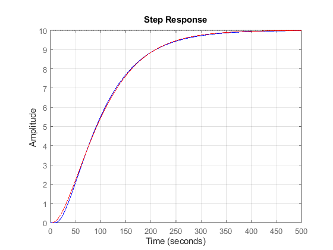
Método de Mollenkamp
dados = load('dadosordem2sobre.txt'); t = dados(:,1); u = dados(:,2); y = dados(:,3); k = mean(dados(end-50:end)); kn = k/k; yn = y/k; yt1 = 0.15*k; yt2 = 0.45*k; yt3 = 0.75*k; t1 = 43; t2 = 83.5; t3 = 143.5; x = (t2-t1)/(t3-t1); zeta = (0.0805-5.547*(0.475-x)^2)/(x-0.356); f1 = 0.708*(2.811^zeta); wn = f1/(t3-t1); f2 = 0.922*(1.66^zeta); teta = t2-f2/wn; G1 = tf(kn*wn^2, [1 2*zeta*wn wn^2]); plot(t,yn); grid on hold on; step(G1, 'r'); grid on hold on; % Neste método foi necessário obter três tempos: % t1 = 43 quando a saída está em 15% do ganho, t2 = 83.5 quando a saída está em 45% e t3 = 143.5 quando a saída está em 75% . % Esses tempos foram obtidos visualmente hold off;

Exercicio 2 (a)
Calcular o Ganho K = 5 (Olhando no gráfico) Calcular Teta = 3 (Olhando no Gráfico)
N = 2; %Número de ciclos visíveis ocorrem em aproximadamente 10 seg. T = 10/N; Wn = 2*pi/T;% Frequência Natural Zeta = 0.6/N;% Fator de Amortecimento Teta = 3; % Tempo Morto s = tf('s'); Hs = (exp(-Teta*s)*Wn^2)/(s^2 + 2*Zeta*Wn*s + Wn^2); hold on; step(Hs*5, 'r'); grid on title('Método Phillips e Parr'); legend({'Dados iniciais', 'Método Phillips e Parr'}) hold off;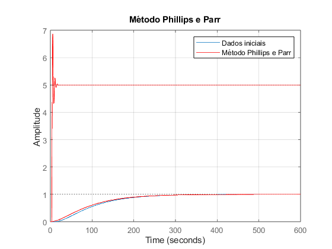
------ Método de Phillips e Parr ------
dados = load('dadosordem2sub.txt'); t = dados(:,1); u = dados(:,2); y = dados(:,3); k = mean(dados(end-50:end)); kn = k/k; yn = y/k; N = 2; T = 10/N; wn = 2*pi/T; zeta = 0.6/N; Teta = 3; G1 = tf(kn*wn^2, [1 2*zeta*wn wn^2], 'InputDelay', Teta); hold on; plot(t,yn); grid on plot(t,yn); grid on; step(G1, 'r'); grid on title('Método Phillips e Parr'); legend({'Dados iniciais', 'Método Phillips e Parr'}) hold off;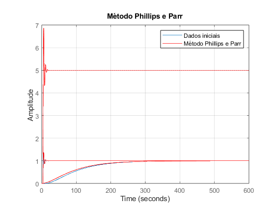
Exercicio 2 (b)
N = 2; %Número de ciclos visíveis ocorrem em aproximadamente 10 seg. T = 10/N; Wn = 2*pi/T; % Frequência Natural Zeta = 0.6/N; % Fator de Amortecimento Beta = sqrt(1 - Zeta^2); Teta = 1/cos(Zeta); %Usado com a equação 2 yt = 1 - (exp(-Zeta*Wn.*tempo)/Beta).*(Beta*cos(Wn*Beta.*tempo) + Zeta*sin(Wn*Beta.*tempo)); yt = 1 - (exp(-Zeta*Wn.*tempo)/Beta).*sin(Wn*Beta*tempo + Teta); plot(tempo, yt, 'g'); grid on; hold on;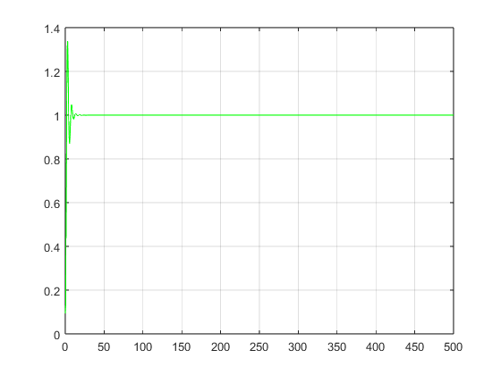
------ Equações de Overshoot ------
dados = load ('dadosordem2sub.txt'); % carrega arquivo txt tempo = dados(:,1); u = dados(:,2); y = dados(:,3); k = mean(dados(end-50:end)); yn = y/k; N = 2; %Número de ciclos visíveis ocorrem em aproximadamente 10 seg. T = 10/N; Wn = 2*pi/T; % Frequência Natural Zeta = 0.6/N; % Fator de Amortecimento Beta = sqrt(1 - Zeta^2); Teta = 1/cos(Zeta); %Usado com a equação 2 yt = 1 - (exp(-Zeta*Wn.*tempo)/Beta).*(Beta*cos(Wn*Beta.*tempo) + Zeta*sin(Wn*Beta.*tempo)); yt = 1 - (exp(-Zeta*Wn.*tempo)/Beta).*sin(Wn*Beta*tempo + Teta); plot(tempo, yt, 'g'); grid on; hold on; plot (tempo, yn); grid on; hold off;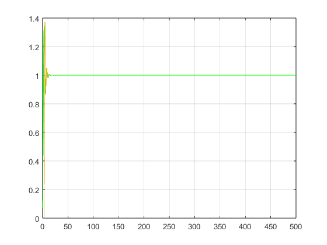
Exercicio 2 (c)
Desconsiderar o tempo morto e condição inicial nula T1 = 0.15*Yf; T2 = 0.45*Yf; T3 = 0.75*Yf;
dados = load ('dadosordem2sub.txt'); % carrega arquivo txt tempo = dados(:,1); u = dados(:,2); y = dados(:,3); plot (tempo, y); grid() norm_u = dados(:,2)/max(u); norm_y = (dados(:,3)- min(y))/(max(y)-min(y)); Yi = mean(y(1:20)); Yf = mean(y(end-50:end)); T1 = 0.15*Yf; T2 = 0.45*Yf; T3 = 0.75*Yf; x = (T2 - T1)/(T3 - T1); Zeta = (0.0805 - 5.547*(0.475 - x)^2)/(x - 0.356); % Fator de Amortecimento if Zeta < 1 F1 = 0.708*(2.811)^Zeta; else F1 = 2.6*Zeta - 0.6; Tau_1 = (Zeta + sqrt(Zeta^2 - 1))/Wn; Tau_2 = (Zeta - sqrt(Zeta^2 - 1))/Wn; end Wn = F1/(T3 - T1); % Frequência Natural F2 = 0.922*(1.66)^Zeta; Teta = T2 - F2/Wn; % Tempo Morto s = tf('s'); Hs = (exp(Teta*s)*Wn^2)/(s^2 + 2*Zeta*Wn*s + Wn^2); hold on; step(Hs*5, 'r'); grid on hold off;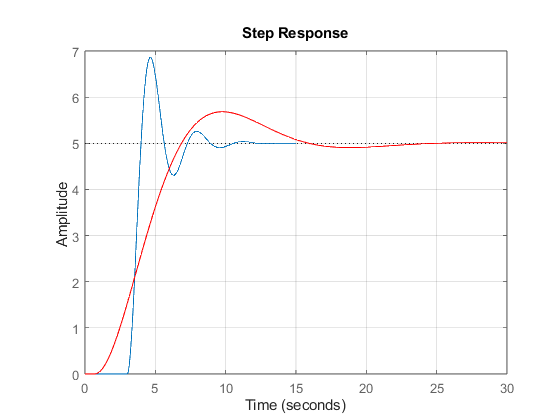
------ Método de Mollenkamp ------
dados = load('dadosordem2sub.txt'); t = dados(:,1); u = dados(:,2); y = dados(:,3); k = mean(dados(end-50:end)); kn = k/k; yn = y/k; yt1 = 0.15*k; yt2 = 0.45*k; yt3 = 0.75*k; t1 = 3.29; t2 = 3.56; t3 = 3.78; x = (t2-t1)/(t3-t1); zeta = (0.0805-5.547*(0.475-x)^2)/(x-0.356); f1 = 0.708*(2.811^zeta); wn = f1/(t3-t1); f2 = 0.922*(1.66^zeta); teta = t2-f2/wn; G1 = tf(kn*wn^2, [1 2*zeta*wn wn^2], 'InputDelay', teta); plot(t,yn); grid on hold on; step(G1, 'r'); grid on hold on; hold off;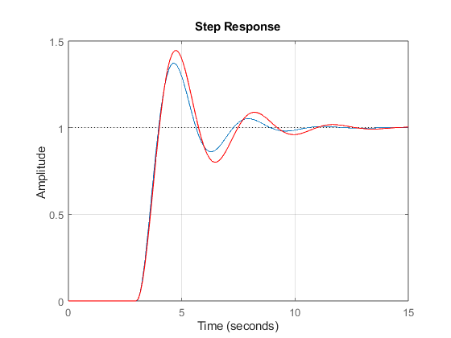
Exercicio 2 (d)
H(s) = e^(-Td*s)/(T1*s + 1)*(T2*s + 1)
m1 = trapz(norm_u)*0.01 - trapz(norm_y)*0.01; tm = 4; % Encontrado de acordo com a inclinação da reta tangente Mi = 1/tm; % Inclinação da Reta Tangente lambda = (tm - m1)*Mi; % 0.2206 n = 0.1; % Encontrado pelo gráfico, a partir do lambda T1 = n^(n/(1-n))/Mi; % Polo T1 do Sistema T2 = n^(1/(1-n))/Mi; % Polo T2 do Sistema Td = m1 - T1 - T2; % Teta (Tempo Morto) s = tf('s'); Hs = exp(-Td*s)/((T1*s + 1)*(T2*s + 1)); hold on; step(Hs, 'r'); grid on hold off;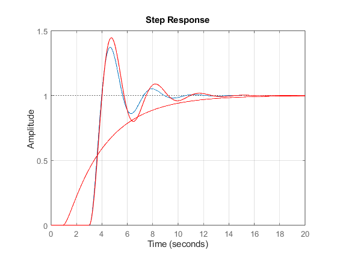
------ Método de Sundaresan ------
dados = load('dadosordem2sub.txt'); t = dados(:,1); u = dados(:,2); y = dados(:,3); k = mean(dados(end-50:end)); kn = k/k; yn = y/k; teta_tau = trapz(t, u- yn); teta = 10; tm = 10; M1 = 1/(tm-teta); mi = teta_tau; lambda = (tm - mi)*M1; n = 0.9; t1 = (n^(n/(1-n)))/M1; t2 = (n^(1/(1-n)))/M1; tauD = mi - t1 - t2; G1 = tf(kn, [0.9592 3.407 1], 'InputDelay', tauD); plot(t, yn); grid on hold on; step(G1, 'r'); grid on hold on; hold off;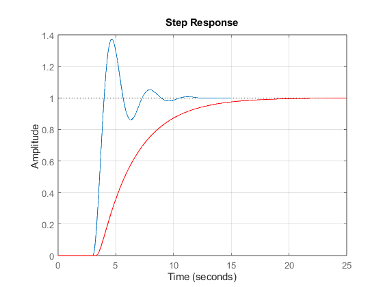
Exercicio 3
dados = load('dadosordem2aleatorio.txt'); t = dados(:,1); u = dados(:,2); y = dados(:,3); u_norm = u - mean(u); y_norm = y - mean(y); impulse_response = deconv(y_norm, u_norm); figure; plot(t(1:length(impulse_response)), impulse_response); title('Resposta ao Impulso'); xlabel('Tempo (s)'); ylabel('Amplitude'); grid on; U = fft(u_norm); Y = fft(y_norm); frequency_response = Y ./ U; N = length(t); fs = 1 / (t(2) - t(1)); f = (0:N-1)*(fs/N); figure; plot(f, abs(frequency_response)); title('Resposta em Frequência'); xlabel('Frequência (Hz)'); ylabel('Amplitude'); grid on; hold off;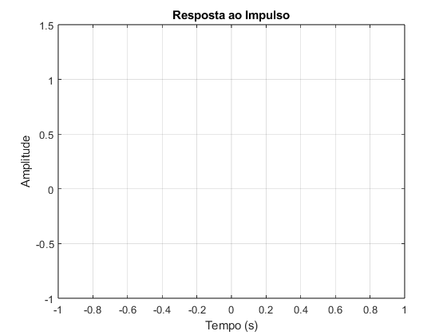 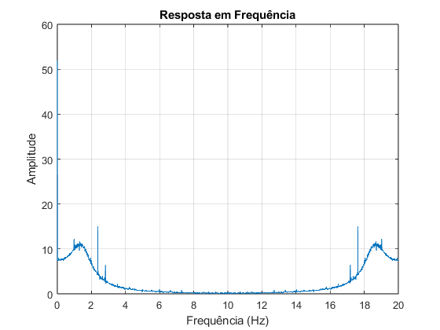